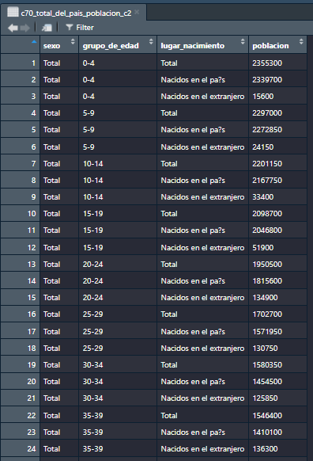

Procesando datos censales en R
Taller práctico para aprender a explorar y procesar indicadores demográficos con los paquetes ARcenso y tidyverse.
Universidad Nacional de la Matanza
2025-09-30
Datos censales
“El censo de población es la operación que consiste en recopilar, elaborar, evaluar, analizar y difundir, de manera simultánea, datos demográficos, económicos y sociales de todas las personas de un país o de una parte bien delimitada de un país, en un momento determinado.”1
Características esenciales que debe cumplir un censo:
Universalidad: cubrir a toda la población y/o todas las viviendas.
Simultaneidad: referirse a la misma fecha de referencia.
Periodicidad: realizarse en intervalos regulares, generalmente cada 10 años.
Individualidad: registrar datos de cada persona y cada vivienda de manera separada.
Los censos de población del INDEC
Importancia de los datos censales
Es una herramienta clave para entender las caracteristicas y necesidades de la población.
Proporcionan datos esenciales para la planificación y el desarrollo de las políticas públicas.
Planificación social y económica
Investigación académica y estudios sociales
Investigaciones de mercado y mucho más…
R
Res una herramienta orientada al trabajo estadístico y análisis de datos.Es un software libre y de código abierto, lo que facilita la colaboración y reproducibilidad.
Existen otros paquetes de datos censales desarrollados en
R(por ejemplo,censobrpara Brasil), lo que crea un ecosistema que favorece la interoperabilidad y el aprendizaje compartido.
Proceso de trabajo en ciencia de datos con R

ARcenso
Es una iniciativa ciudadana que nació de nuestra experiencia profesional con datos censales en el INDEC, motivada por la necesidad de contar con datos accesibles y ordenados, e inspirada en el espíritu colaborativo de la comunidad R. Con el apoyo del Programa de Campeonas de rOpenSci (2023–2024), el proyecto es liderado por Andrea Gómez Vargas, junto a Emanuel Ciardullo como co-desarrollador y Luis D. Verde como mentor.
¿Cuál es la propuesta?
Generar un paquete que permita disponer de los datos oficiales de los censos nacionales de población en Argentina provenientes del INDEC desde 1970 hasta 2022, homogeneizados, ordenados y listos para usar.
Objetivo
Disponibilidad: de excel a tablas ordenadas en R


¿Por qué?
Análisis históricos y memoria digital
Actualmente los resultados históricos censales de 1970, 1980, 1991, 2001, 2010 y 2022 están disponibles en distintos formatos a través de libros físicos, PDFs, archivos en formato excel o en REDATAM, sin contar con un sistema o formato unificado que permita trabajar con los datos de estos seis periodos censales como base de datos.
Antes de las funciones: Marco conceptual
Principios FAIR
Localizable (Findable):
Datos censales centralizados que abarcan seis periodos censales nacionales (1970–2022)
Accesible (Accessible):
Conjuntos de datos censales públicos, homogenizados, disponibles en formatos abiertos y acompañados de documentación y metadatos completos.
Interoperable (Interoperable):
Tablas ordenadas (formato tidy) y bien estructuradas que permiten una integración sencilla con otros conjuntos de datos.
Reutilizable (Reusable):
Incluye descripciones detalladas de variables, codificación estandarizada, licencias abiertas y estructuras de datos reproducibles que facilitan su uso a largo plazo y la comparación entre estudios.
Estructura y temas de los datos censales según la ONU
Temas del Censo Núcleo: Variables esenciales (ej.: edad, sexo, población)
Núcleo derivado: Variables calculadas (ej.: tasas de fecundidad)
Adicionales: Temas específicos del país (ej.: religión)
Unidades Conceptuales Población: Personas individuales
Vivienda: Unidades habitacionales físicas
Hogar: Personas que comparten una vivienda
Cobertura Geográfica
Nacional: Total del país
Jurisdicciones: (23 provincias de Argentina y la Ciudad Autónoma de Buenos Aires)
{ARcenso} üì¶
¿Cómo usarlo?
Instalación
Activación del paquete
Principales funciones
get_census()
Obtener tablas por año o temática censal
get_census(year = 1970,
topic = "CONDICIONES HABITACIONALES",
geolvl = "Total del país")
#> $c70_total_del_pais_poblacion_c18
#> regimen_de_tenencia hogares personas cuartos
#> 1 Propietario 3553250 13778700 11197900
#> 2 Inquilino o arrendatario 1380950 4692800 3305350
#> 3 Ocupante en relación de dependencia 353300 1402500 880050
#> 4 Ocupante gratuito 575650 2271150 1196500
#> 5 En otro carácter 192950 816350 419800
#>
#> $c70_total_del_pais_poblacion_c20
#> tama?o_hogar regimen_tenencia hogares
#> 1 De 1 persona Total 615900
#> 2 De 1 persona Propietario 255900
#> 3 De 1 persona Inquilino o arrendatario 199350
#> 4 De 1 persona Ocupante con relación de dependencia 52600
#> 5 De 1 persona Ocupante gratuito 82100
#> 6 De 1 persona Otro 25950
#> 7 De 2 personas Total 1125250
#> 8 De 2 personas Propietario 652950
#> 9 De 2 personas Inquilino o arrendatario 302400
#> 10 De 2 personas Ocupante con relación de dependencia 49250
#> 11 De 2 personas Ocupante gratuito 91300
#> 12 De 2 personas Otro 29350
#> 13 De 3 personas Total 1230600
#> 14 De 3 personas Propietario 744800
#> 15 De 3 personas Inquilino o arrendatario 290650
#> 16 De 3 personas Ocupante con relación de dependencia 62150
#> 17 De 3 personas Ocupante gratuito 103200
#> 18 De 3 personas Otro 29800
#> 19 De 4 personas Total 1255000
#> 20 De 4 personas Propietario 787900
#> 21 De 4 personas Inquilino o arrendatario 266000
#> 22 De 4 personas Ocupante con relación de dependencia 65650
#> 23 De 4 personas Ocupante gratuito 102850
#> 24 De 4 personas Otro 32600
#> 25 De 5 personas Total 818550
#> 26 De 5 personas Propietario 516100
#> 27 De 5 personas Inquilino o arrendatario 157500
#> 28 De 5 personas Ocupante con relación de dependencia 48200
#> 29 De 5 personas Ocupante gratuito 71550
#> 30 De 5 personas Otro 25200
#> 31 De 6 personas Total 443250
#> 32 De 6 personas Propietario 272000
#> 33 De 6 personas Inquilino o arrendatario 80000
#> 34 De 6 personas Ocupante con relación de dependencia 29000
#> 35 De 6 personas Ocupante gratuito 45750
#> 36 De 6 personas Otro 16500
#> 37 De 7 personas Total 276750
#> 38 De 7 personas Propietario 163400
#> 39 De 7 personas Inquilino o arrendatario 44950
#> 40 De 7 personas Ocupante con relación de dependencia 19950
#> 41 De 7 personas Ocupante gratuito 35200
#> 42 De 7 personas Otro 13250
#> 43 De 8 personas Total 121450
#> 44 De 8 personas Propietario 70600
#> 45 De 8 personas Inquilino o arrendatario 18250
#> 46 De 8 personas Ocupante con relación de dependencia 10050
#> 47 De 8 personas Ocupante gratuito 16250
#> 48 De 8 personas Otro 6300
#> 49 De 9 personas Total 76000
#> 50 De 9 personas Propietario 40950
#> 51 De 9 personas Inquilino o arrendatario 9400
#> 52 De 9 personas Ocupante con relación de dependencia 7150
#> 53 De 9 personas Ocupante gratuito 12900
#> 54 De 9 personas Otro 5600
#> 55 De 10 y más Total 93350
#> 56 De 10 y más Propietario 48650
#> 57 De 10 y más Inquilino o arrendatario 12450
#> 58 De 10 y más Ocupante con relación de dependencia 9300
#> 59 De 10 y más Ocupante gratuito 14550
#> 60 De 10 y más Otro 8400check_repository()
Chequeo de tablas dispónibles por año o temática censal
check_repository(year = 1970,
topic = "CONDICIONES HABITACIONALES",
geolvl = "Total del país")
#> Archivo
#> 1 c70_total_del_pais_poblacion_c18
#> 2 c70_total_del_pais_poblacion_c20
#> Titulo
#> 1 Cuadro 18. Total del país. Hogares particulares, personas y cuartos, por régimen de tenencia. Año 1970
#> 2 Cuadro 20. Total del país. Hogares particulares, por tamaño del hogar según régimen de tenencia. Año 1970arcenso()
tablero de consulta

Documentación
Manos al código

Instalación de paquetes de trabajo
ARcenso
tidyverse
Activación de paquetes con library
esto realizo cada vez que use R
Importo datos con la función get_census()
estructura_pba_1970 <- get_census(year = 1970,
topic = "ESTRUCTURA DE POBLACION",
geolvl = "Provincia de Buenos Aires")
estructura_pba_1970
#> $c70_buenosaires_poblacion_c1
#> # A tibble: 162 × 4
#> sexo grupo_de_edad lugar_nacimiento poblacion
#> <chr> <chr> <chr> <chr>
#> 1 Total 0-4 Total 833150
#> 2 Total 0-4 Nacidos en el país 827450
#> 3 Total 0-4 Nacidos en el extranjero 5700
#> 4 Total 5-9 Total 791450
#> 5 Total 5-9 Nacidos en el país 782700
#> 6 Total 5-9 Nacidos en el extranjero 8750
#> 7 Total 10-14 Total 759500
#> 8 Total 10-14 Nacidos en el país 746150
#> 9 Total 10-14 Nacidos en el extranjero 13350
#> 10 Total 15-19 Total 743300
#> # ℹ 152 more rowsReviso la estructura de mis datos
str(estructura_pba_1970)
#> List of 1
#> $ c70_buenosaires_poblacion_c1: tibble [162 × 4] (S3: tbl_df/tbl/data.frame)
#> ..$ sexo : chr [1:162] "Total" "Total" "Total" "Total" ...
#> ..$ grupo_de_edad : chr [1:162] "0-4" "0-4" "0-4" "5-9" ...
#> ..$ lugar_nacimiento: chr [1:162] "Total" "Nacidos en el país" "Nacidos en el extranjero" "Total" ...
#> ..$ poblacion : chr [1:162] "833150" "827450" "5700" "791450" ...Elijo la tabla a trabajar como DataFrame
estructura_pba_1970 <- estructura_pba_1970[[1]]
estructura_pba_1970
#> # A tibble: 162 × 4
#> sexo grupo_de_edad lugar_nacimiento poblacion
#> <chr> <chr> <chr> <chr>
#> 1 Total 0-4 Total 833150
#> 2 Total 0-4 Nacidos en el país 827450
#> 3 Total 0-4 Nacidos en el extranjero 5700
#> 4 Total 5-9 Total 791450
#> 5 Total 5-9 Nacidos en el país 782700
#> 6 Total 5-9 Nacidos en el extranjero 8750
#> 7 Total 10-14 Total 759500
#> 8 Total 10-14 Nacidos en el país 746150
#> 9 Total 10-14 Nacidos en el extranjero 13350
#> 10 Total 15-19 Total 743300
#> # ℹ 152 more rowsCalculo indicador con dplyr
Estructura de población por grupos quinquenales de edad según sexo
pba_1970 <- estructura_pba_1970 %>%
filter(sexo != "Total") %>%
mutate(
grupo_de_edad = case_when(
grupo_de_edad == "0-4" ~ "00-04",
grupo_de_edad == "5-9" ~ "05-09",
TRUE ~ grupo_de_edad),
poblacion = as.numeric(poblacion)) %>%
group_by(sexo) %>%
mutate(
poblacion_rel = if_else(sexo == "Varones", -poblacion / sum(poblacion),
poblacion /sum(poblacion))) %>%
ungroup()Grafico el indicador con ggplot2
g1 <- pba_1970 %>%
ggplot(aes(x = poblacion_rel,
y = grupo_de_edad,
fill = sexo)) +
geom_col() +
scale_fill_manual(values = c("#003049","#6a994e")) +
scale_x_continuous(
limits = c(-0.12, 0.12),
breaks = seq(-0.12, 0.12, by = 0.03),
labels = paste0(abs(seq(-12, 12, by = 3)), "%") ) +
labs(
title = "Gráfico 1. Estructura de población por sexo y grupo de edad.",
subtitle = "Provincia de Buenos Aires. Año 1970",
x = "porcentaje",
y = "grupo de edad",
fill = " ",
caption = "Fuente: INDEC, Censo Nacional de Población, Familias y Viviendas 1970." ) +
theme_bw() +
theme(legend.position = "bottom")Gráfico estático con ggplot2
Tabla de resultado en gt
tabla1 <- estructura_pba_1970 %>%
pivot_wider(names_from = "sexo", values_from = "poblacion") %>%
filter(lugar_nacimiento == "Total") %>%
select(-2) %>%
mutate(Total = as.numeric(Total),
Mujeres = as.numeric(Mujeres),
Varones = as.numeric(Varones))
tabla_pba <- tabla1 %>%
gt() %>%
tab_header(
title = "Tabla 1. Estructura de población por sexo y grupo de edad. Provincia de Buenos Aires. Año 1970" ) %>%
cols_label(
grupo_de_edad = "Grupo quinquenal de edad"
) %>%
grand_summary_rows(
columns = c(Total, Varones, Mujeres),
fns = list("Total población" = ~sum(.))) %>%
tab_options(
heading.align = "left",
heading.background.color = "#2B5597",
footnotes.background.color = "#cedcf1",
column_labels.font.weight = "bold"
) %>%
tab_source_note('Fuente: INDEC, Censo Nacional de Población, Familias y Viviendas 1970.') Tabla final
| Tabla 1. Estructura de población por sexo y grupo de edad. Provincia de Buenos Aires. Año 1970 | ||||
|---|---|---|---|---|
| Grupo quinquenal de edad | Total | Varones | Mujeres | |
| 0-4 | 833150 | 422550 | 410600 | |
| 5-9 | 791450 | 400900 | 390550 | |
| 10-14 | 759500 | 381250 | 378250 | |
| 15-19 | 743300 | 382150 | 361150 | |
| 20-24 | 736150 | 372250 | 363900 | |
| 25-29 | 666950 | 337150 | 329800 | |
| 30-34 | 620600 | 309200 | 311400 | |
| 35-39 | 634350 | 323900 | 310450 | |
| 40-44 | 627400 | 318500 | 308900 | |
| 45-49 | 559700 | 281650 | 278050 | |
| 50-54 | 458800 | 225900 | 232900 | |
| 55-59 | 408350 | 201450 | 206900 | |
| 60-64 | 335400 | 165000 | 170400 | |
| 65-69 | 250250 | 121600 | 128650 | |
| 70-74 | 165950 | 75950 | 90000 | |
| 75-79 | 106450 | 47300 | 59150 | |
| 80-84 | 59250 | 25450 | 33800 | |
| 85 y más | 31250 | 12050 | 19200 | |
| Total población | — | 8788250 | 4404200 | 4384050 |
| Fuente: INDEC, Censo Nacional de Población, Familias y Viviendas 1970. | ||||